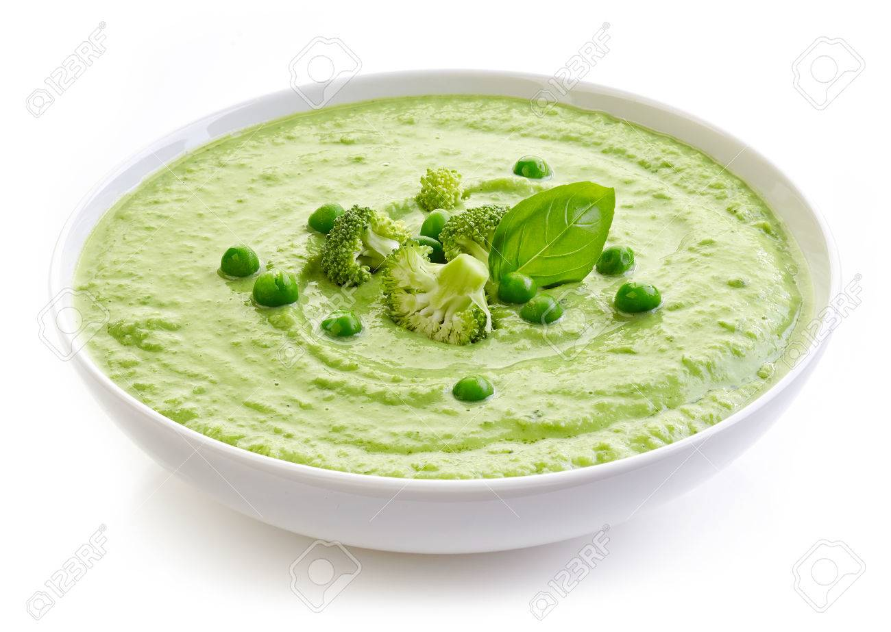
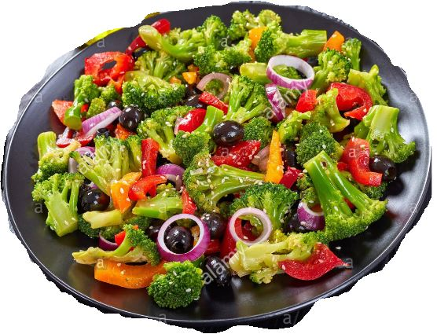
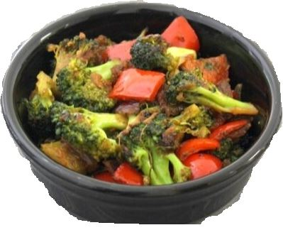

Health is not about
how much
Weight you Lose
It's all about
Life you Gain
Broccoli is a great source of vitamins K and C, a good source of folate (folic acid) and also provides potassium, fiber. Vitamin C – builds collagen, which forms body tissue and bone, and helps cuts and wounds heal. Vitamin C is a powerful antioxidant and protects the body from damaging free radicals. Broccoli is a good carb and is high in fiber, which aids in digestion, prevents constipation, maintains low blood sugar, and curbs overeating. Along with this, broccoli is also great for weight loss because it is rich in fiber
Broccoli Soup
A French soup with a spicy Asian twist. It is a delicious treat to savour during the winter season. Heat some olive oil in a pan and fry the onions. Now toss in the garlic. Throw in the broccoli now. Add some water to this, Now add the cream. Add this mixture to a blender and blend well. Keep aside Now in another add some oilve oil.. Once done, drain of all oil and seaon the potatoes with some salt. Keep aside Now for the apple compote, heat some butter in a pan, add the chopped apple and a pinch of sugar. Let it simmer till the apple becomes gooey and brown. Pour out the soup in a bowl garnish with the fried potatoes and red chilly flakes. Serve with the apple compote. Key Ingredients: Olive oil, broccoli, Red chilly flakes
Broccoli Salad
Yellow and red peppers, broccoli and spring onions, all tossed together with some mild seasoning and crunchy apricots. With a delicious dressing in place, this salad is great for broccoli lovers.Season all the veggies with salt, pepper, thyme and olive oil. Peel the bell peppers, cut into strips and deseed them.Slice the broccoli stems. Slice the garlic into chips, fry in olive oil and allow to cool. Saute the onions in the garlic oil.Cut the spring onions into batons. Blend all the ingredients for the dressing in a mixer or hand blender. Toss all the veggies along with the dressing.Chill before serving. Key Ingredients: Olive oil, Black pepper (cracked), Salt , Whole white onion, Yellow peppers, Red peppers, Broccoli florets, Broccoli stems, Garlic chips, Spring onion batons, Apricots (dried)
Chatpatti Broccoli
Tamarind, pepper, masalas, curry leaves and 20 minutes is all you need for this gorgeous broccoli. It is delicious, flavourful and just too easy to cook. Heat oil and add mustard, curry leaves, red pepper, asafoetida and cumin. When seeds start to splutter, add the ginger and garlic, saute till light brown. Add the broccoli and saute over high heat a few times, then lower the heat, cover and cook till bite like Add tamarind and salt, let it come to a boil and serve hot.